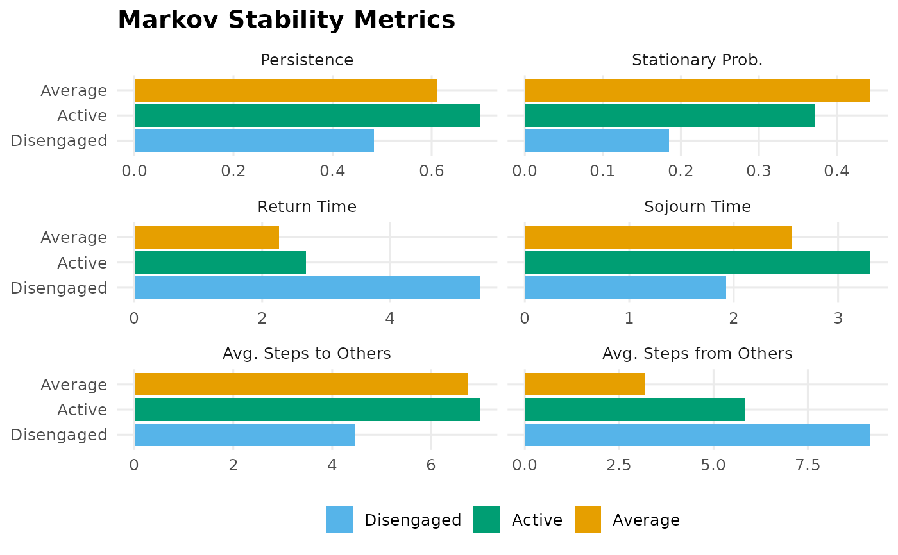

Computes per-state stability metrics from a transition network: persistence (self-loop probability), stationary distribution, mean recurrence time, sojourn time, and mean accessibility to/from other states.
Arguments
- x
A
netobject,cograph_network,tnaobject, row-stochastic numeric transition matrix, or a wide sequence data.frame (rows = actors, columns = time-steps).- normalize
Logical. Normalize rows to sum to 1? Default
TRUE.- metrics
Character vector. Which metrics to plot. Options:
"persistence","stationary_prob","return_time","sojourn_time","avg_time_to_others","avg_time_from_others". Default: all six.- ...
Ignored.
Value
An object of class "net_markov_stability" with:
- stability
Data frame with one row per state and columns:
state,persistence(\(P_{ii}\)),stationary_prob(\(\pi_i\)),return_time(\(1/\pi_i\)),sojourn_time(\(1/(1-P_{ii})\)),avg_time_to_others(mean MFPT leaving state \(i\)),avg_time_from_others(mean MFPT arriving at state \(i\)).- mpt
The underlying
net_mptobject.
Details
Sojourn time is the expected consecutive time steps spent in a
state before leaving: \(1/(1-P_{ii})\). States with
persistence = 1 have sojourn_time = Inf.
avg_time_to_others: mean passage time from this state to all others; reflects how "sticky" or "isolated" the state is.
avg_time_from_others: mean passage time from all other states to this one; reflects accessibility (attractor strength).
Examples
net <- build_network(as.data.frame(trajectories), method = "relative")
ms <- markov_stability(net)
print(ms)
#> Markov Stability Analysis
#>
#> state persistence stationary_prob return_time sojourn_time
#> Active 0.6976 0.3719 2.69 3.31
#> Average 0.6099 0.4431 2.26 2.56
#> Disengaged 0.4831 0.1850 5.41 1.93
#> avg_time_to_others avg_time_from_others
#> 6.99 5.84
#> 6.74 3.20
#> 4.47 9.16
# \donttest{
plot(ms)

# }